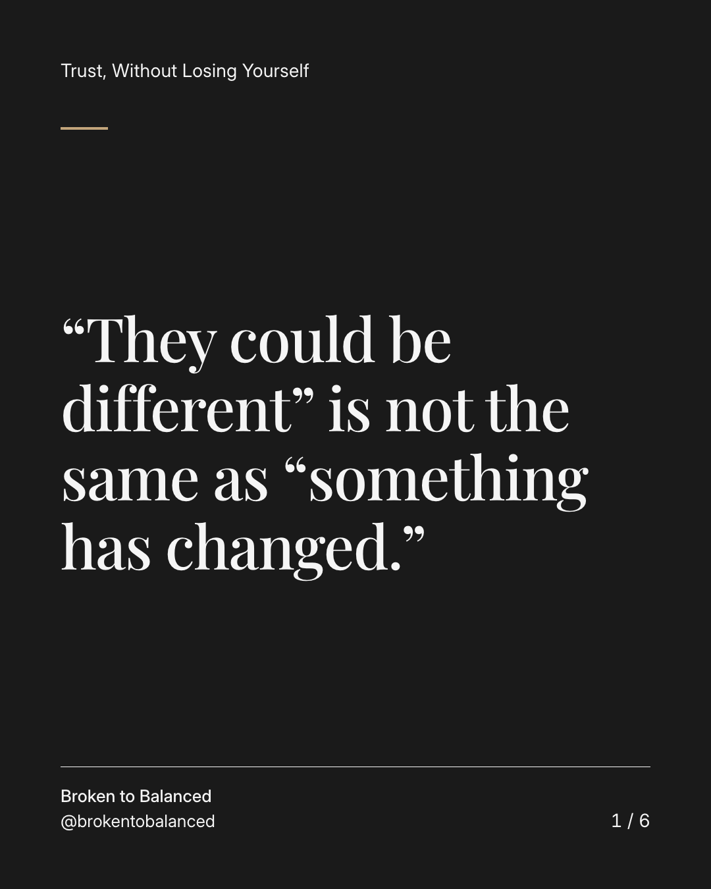
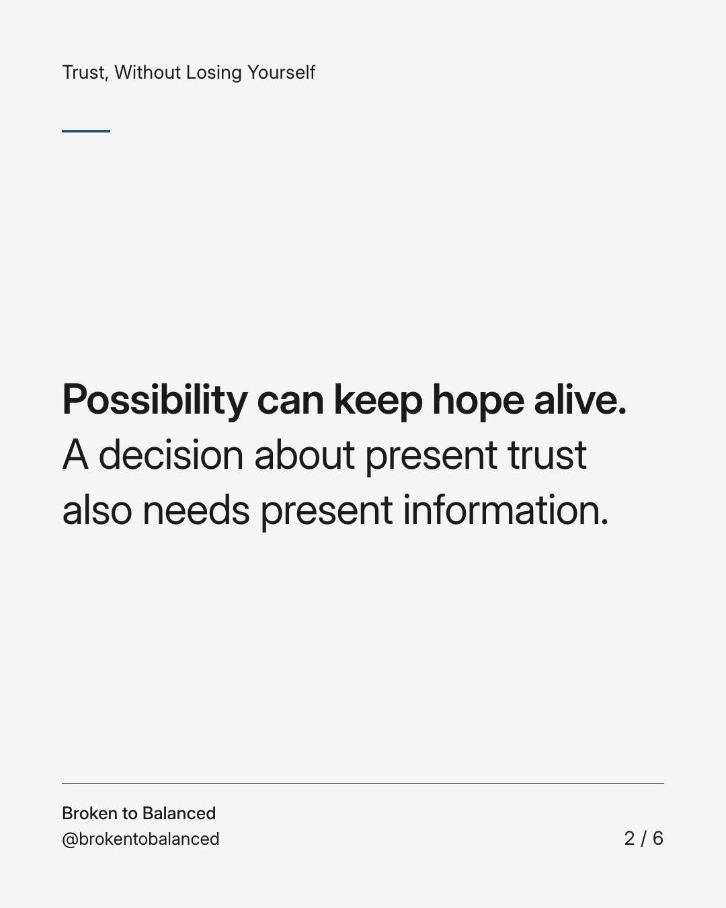
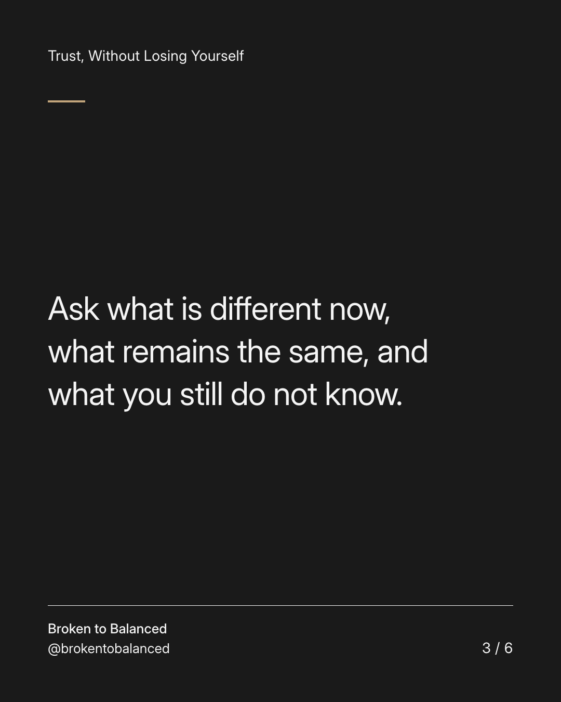
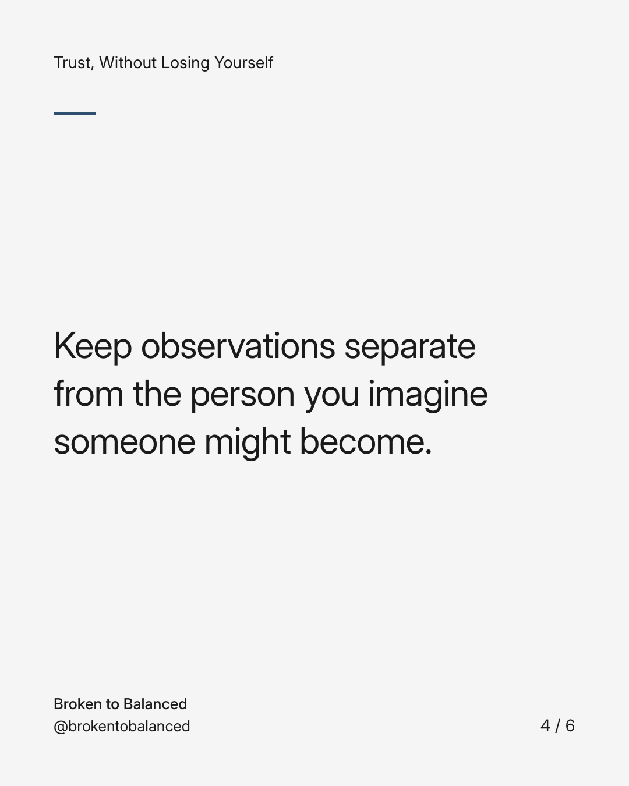
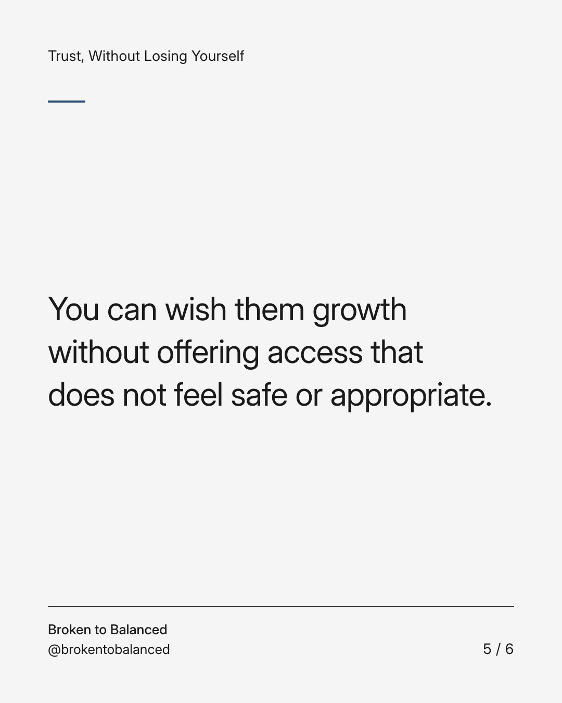
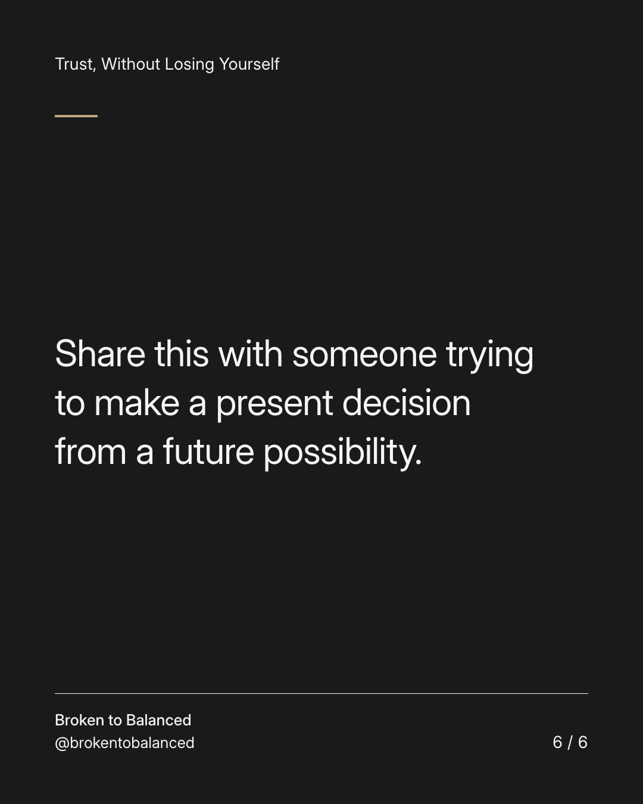

Exact text and accessibility text
“They could be different” is not the same as “something has changed.”
Slide 1 of 6. “They could be different” is not the same as “something has changed.”


Exact text and accessibility text
Possibility can keep hope alive. A decision about present trust also needs present information.
Slide 2 of 6. Possibility can keep hope alive. A decision about present trust also needs present information.


Exact text and accessibility text
Ask what is different now, what remains the same, and what you still do not know.
Slide 3 of 6. Ask what is different now, what remains the same, and what you still do not know.


Exact text and accessibility text
Keep observations separate from the person you imagine someone might become.
Slide 4 of 6. Keep observations separate from the person you imagine someone might become.


Exact text and accessibility text
You can wish them growth without offering access that does not feel safe or appropriate.
Slide 5 of 6. You can wish them growth without offering access that does not feel safe or appropriate.


Exact text and accessibility text
Share this with someone trying to make a present decision from a future possibility.
Slide 6 of 6. Share this with someone trying to make a present decision from a future possibility.
Exact caption
Plain-text fallback: select and copy the caption.